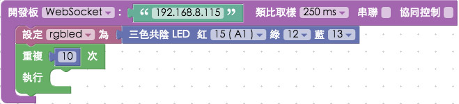
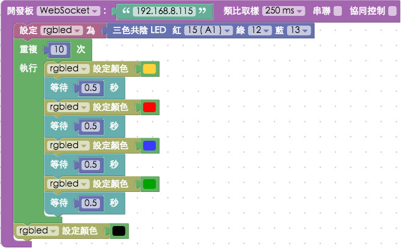
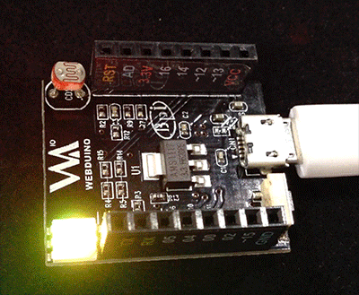

躍動的 Smart 三色燈
在 Smart 三色燈初體驗 裡我們已經對操控 Smart 的三色燈有了基本的認識，這篇將透過「等待」與「迴圈」積木，實作出一個躍動的三色燈。
Webduino Blockly 操作解析
首先我們放入開發板的積木，下拉選單選擇 WebSocket ( 注意，使用 WebSocket 的工具網址必須是 http 開頭 )，填入開發板的 ip 位址，放入三色共陰 LED 燈的積木，紅 15，綠 12，藍 13。
放入「重複」的積木，設定為重複十次。

在迴圈裡放入「等待」的積木，設定等待時間為 0.5 秒，就可以每 0.5 秒切換顏色，因為是放在重複的積木內，所以當動作執行十次之後，就會把三色燈關起來 ( 設定為黑色 )。

點選右上方紅色按鈕執行，如此一來我們的三色LED燈就會不停地切換顏色，如躍動一般。 ( 解答：http://blockly.webduino.io/#-KbJVKgji5-EvGxORPDs )

範例解析
HTML 的 header 引入 webduino-all.min.js，目的在讓瀏覽器可以支援 WebComponents 以及 Webduino 所有的元件，如果是用 Blockly 編輯工具產生的程式碼，則要額外引入 webduino-blockly.js。
<script src="https://webduino.io/components/webduino-js/dist/webduino-all.min.js"></script>
<script src="https://webduinoio.github.io/webduino-blockly/webduino-blockly.js"></script>
程式碼的部分可以看到是走 WebSocket 的模式：{board: 'Smart', url: '192.168.0.230'}，等待的部分我們使用了awit來實作。
(async function () {
var rgbled;
boardReady({board: 'Smart', url: '192.168.0.230'}, async function (board) {
board.systemReset();
board.samplingInterval = 50;
rgbled = getRGBLedCathode(board, 15, 12, 13);
for (var count = 0; count < 10; count++) {
rgbled.setColor('#ff0000');
await delay(0.5);
rgbled.setColor('#3366ff');
await delay(0.5);
rgbled.setColor('#009900');
await delay(0.5);
rgbled.setColor('#ffcc33');
await delay(0.5);
}
rgbled.setColor('#000000');
});
}());
以上就是躍動的 Smart 三色燈 ( 顏色輪播切換 )。 完整程式碼：http://bin.webduino.io/zudar/1/edit?html,js,output 解答：http://blockly.webduino.io/#-KbJVKgji5-EvGxORPDs
如果您還想了解更多，可以參考：
2. Blockly 教學：https://goo.gl/Y8sRkl
3. 產品總覽：https://webduino.io/buy.html
4. 露天賣場：http://goo.gl/0Dj9ip